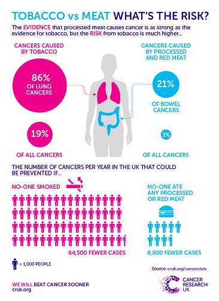
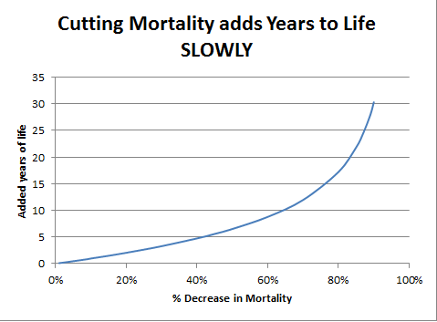

2015년 10월 28일
최근에 겪은 인상적인 경험이 하나 있다. 중증 환자 한 분이 내원하셨고, 나는 강력한 정신과 약물을 처방했다. 그런데 환자는 온라인으로 약물을 검색해 보더니, 사망률이 X% 증가한다는 연관성이 있다며 복용을 거부했다.
“하지만,” 내가 지적했다. “당신은 정말 비참한 상태잖아요.”
“하지만 난 죽고 싶지 않아요!”
그래서 나는 관련 내용을 찾아보고 계산을 해보았고, 그 결과 그녀의 수명이 평균적으로 두 달 정도 단축될 것이라는 사실을 알아냈다. 그리고 나는 그녀에게 물었다. “어느 쪽을 더 선호하시겠어요? 심각한 질병을 앓으며 80년을 사는 것, 아니면 대체로 괜찮은 상태로 79.5년을 사는 것 말이에요.”
그녀는 여전히 납득하지 못했고, 그래서 나는 그녀에게 쿠키를 먹느냐고 물었다. 그녀는 그렇다고, 거의 매일 먹는다고 답했다. 나는 쿠키가 약보다 그녀의 수명을 더 많이 앗아갈 가능성이 높으며, 약이 쿠키보다 그녀의 삶에 더 많은 가치를 더해줄 것이라고 확신시켰다.
그녀는 그 약을 복용했다.
얼마 전 사람들이 고기가 대장암을 유발한다는 연구 결과를 공유하기 시작했을 때 이 생각이 났다. 많은 이들이 가공육, 흡연과 더불어 암 유발 요인으로 꼽혀 같은 헤드라인을 사용했다. 하지만 다음과 같은 인포그래픽들이 이를 매우 정확하게 반박했다.

하지만 이것만으로는 무언가 부족하다는 느낌이 든다. 고기를 먹는 것이 흡연만큼 나쁜 것은 아니다. 하지만 그렇다고 해서 그것이 나쁘지 않다는 뜻은 아니며, 여전히 나쁠 수 있는 여지는 충분하다. 이 위험성을 더 정확하게 수치화할 수 있을까?
BBC 기사:에 따르면, “캠브리지 대학교(University of Cambridge)의 리스크 전공 교수인 데이비드 스피겔할터(Sir David Spiegelhalter) 경은 ‘평생 베이컨을 먹어온 사람 100명 중 한 명꼴로 대장암 사례가 한 건 더 발생할 것’이라고 주장한다.”
여기서 우리는 중요한 사실 하나를 배운다. '리스크 교수'라는 직함은 정말 멋지며, 해리슨 포드(Harrison Ford)가 주연을 맡은 <데이비드 스피겔홀터, 리스크 교수(David Spiegelhalter, Risk Professor)>라는 BBC TV 쇼가 반드시 제작되어야 한다는 점이다.
또한, 상대적 위험도 대신 절대적 위험도를 사용하라! "대장암의 21%가 육류로 인해 발생한다"라는 말은 당신이 얼마나 걱정해야 하는지에 대해 제대로 된 감을 잡게 해주지 않는다. "평생 베이컨을 먹은 사람 100명당 대장암 사례가 1건 추가된다"라고 하는 편이 훨씬 낫다.
하지만 관점을 조금 더 넓혀보자. 대장암의 치사율은 절반이 조금 안 된다. 따라서 100명당 한 건의 사례가 추가된다는 것은, 매일 베이컨을 먹을 경우 평소라면 걸리지 않았을 암으로 인해 사망할 확률이 0.4%라는 뜻이다.
대장암의 평균 진단 연령은 69세이며, 평균 기대 수명은 79세이다. 수많은 복잡한 변수들을 무시하고 매우 관대하게 추산하더라도, 대장암으로 인한 사망은 평균적으로 당신의 수명에서 10년을 앗아간다.
이를 계산해 보면, 10년을 잃을 확률이 0.4%라는 것은 평균적으로 2주를 잃는다는 의미가 된다.
치명적이든 그렇지 않든, 모든 암 진단이 사망과 무관하게 당신의 수명 중 2년 치에 해당하는 추가적인 고통을 준다고 가정해 보자. 이는 대략 일주일 정도의 시간에 해당한다.
결과적으로, 평생 매일 가공육을 섭취한다면 대장암으로 인해 기대 수명이 약 3주 정도 단축될 것이다. 이는 고기를 한 번 먹을 때마다 수명 1분을 지불하는 셈이다. 아마 고기를 요리하고 준비하는 데 드는 시간이 그보다 20배는 더 많을 것이다.
내가 "고기를 먹으면 수명이 단지 3주만 줄어들 것이다"라고 말하는 것이 아님에 유의하라. 그 수치는 이 연구를 통해 우리가 명확한 증거를 가지고 있는 양일 뿐이다. 이는 당신이 너무 걱정하지 않도록 이 연구를 맥락 속에서 파악해야 하는 이유를 보여주는 사례다.
그럼에도 불구하고, 주로 심혈관 또는 대사 질환과 관련하여 더 큰 위험성을 시사하는 다른 연구들이 많이 존재한다. 예를 들어, 이 기사에 따르면 일부 연구에서는 하루 한 serving의 적색육 섭취가 사망률을 13% 높이고, 가공육 한 serving은 20% 높인다고 주장한다. 하지만 동시에 50만 명을 대상으로 한 또 다른 연구를 인용하는데, 여기서는 육류 섭취가 오히려 약간의 보호 효과가 있으며(하아), 고기를 먹지 않는 집단에서 모든 원인으로 인한 사망률이 더 높게 나타났다고 한다.
뭐, 됐고. 대상 수준(object-level)의 질문은 잠시 잊어보자. "가공육이 사망률을 20% 높인다"와 같은 주장을 우리는 어떻게 받아들여야 하는가?
만약 당신이 나와 같은 부류라면, 아마 이렇게 생각하고 싶을 것이다. “좋아, 평균 기대 수명이 80년이니까 거기서 20%를 빼면 64년이네. 매일 베이컨을 먹어도 64년은 살 수 있겠어.” 틀렸다. 사망률은 훨씬 더 복잡하지만, 핵심은 젊은 나이에 죽는 사람이 매우 적다는 점이다. 30세에 사망할 확률이 거의 0%라면, 0에 20%를 더해도 여전히 0이다. 사망 확률은 매우 천천히 상승하며, 따라서 사망률에 큰 변화가 생기더라도 근본적인 분포에는 거의 영향을 미치지 않는다. 내가 지금까지 본 자료 중 이를 제대로 설명한 유일한 곳은 조쉬 미텔도르프(Josh Mitteldorf)의 블로그였으며, 그곳에는 다음과 같은 차트가 포함되어 있다.

이것은 감소에 관한 이야기고 우리는 증가에 대해 말하고 있지만, 여기서는 별 차이가 없을 것이다. 사망률이 20% 증가한다고 해서 수명이 80세에서 64세로 뚝 떨어지지는 않는다. 아마 80세에서 78세 정도로 낮아지는 정도일 것이다.
실제로 BBC 기사 뒷부분에서는 데이비드 스피겔할터(David Spiegelhalter, 무려 리스크 교수다!)를 등장시켜 다음과 같이 설명한다.
만약 이 연구들이 옳다면... 매일 베이컨 샌드위치를 먹는 사람은 그렇지 않은 사람보다 평균적으로 2년 더 짧게 살 것으로 예상된다. 비례식으로 계산하면, 베이컨 샌드위치를 하나 먹을 때마다 수명에서 1시간씩 사라지는 셈이다. 이해를 돕기 위해 비교하자면, 담배 20개비를 피울 때마다 수명에서 약 5시간이 깎이는 것과 같다.
가공육의 경우는 그렇다. 적색육은 더 안전하다. 또한, 이러한 연구 결과들이 옳은지는 여전히 알 수 없다.
이것이 바로 절대적 위험과 상대적 위험을 구분하는 것이 중요한 이유다. 대장암 발생률 21% 증가! 모든 원인으로 인한 사망률 20% 증가! 같은 무시무시한 숫자들을 듣다 보면, 핫도그를 한 입 베어 무는 순간 즉사할 것만 같은 기분이 든다. 물론 언제나 그럴 가능성은 있다. 건강한 것은 좋고, 건강하지 않은 것은 나쁘다. 하지만 삶이 그렇게나 소중하고 평온함이 그렇게나 달콤해서, 베이컨 샌드위치를 먹기 위해 단 한 시간의 수명조차 희생하고 싶지 않은 것인가?
이 모든 시간은 결국 쌓이기 마련이다. 식단 권장 사항이 중요하지 않다는 말이 아니다. 다만 권장 사항은 전체적인 관점에서 중요하다는 뜻이다. 끔찍하게 건강에 해로운 방식으로 먹지 않겠다는 기본 정신만 지킨다면, 설령 어떤 음식이 자신에게 최선이 아니라는 점을 알더라도 좋아하는 특정 음식을 계속 먹을 수 있는 충분한 여유가 있다. 그리고 고기는 분명히 그 범주에 속한다.
(물론 도덕적 문제들을 어떻게 관리할지에 대해서도 고민해 볼 필요가 있을 것이다)
Please provide the English text you would like me to translate. You have provided the header and a placeholder, but the actual paragraph from "Meat Your Doom" is missing.
통제 집단이 통제 불능 상태다홈SSC 저널 클럽: 실험에 대한 전문가의 예측
Please provide the English text you would like me to translate. You have provided the guidelines and the word count, but the actual content of the paragraph from "Meat Your Doom" is missing. Once you provide the text, I will translate it immediately according to your instructions.